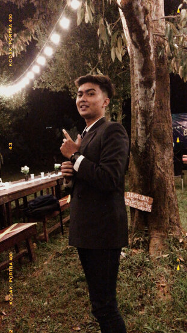

HI! Selamat datang di web sederhana milikku

About Me :
Hi!, Namaku Hardhika Propitadewa. Di web ini kalian akan melihat profil biodata lengkapku.
- Name : Hardhika Propitadewa
- Age : 19 th Years Old
- Date of Birth : 18 th September 2001
- Address : Jember, East Java, Indonesia
- Email : propitadewa@gmail.com
My Education :
Setelah melihat biodataku, di bawah ini terdapat berbagai jenjang pendidikan yang telah aku tempuh.
-
-
Institut Teknologi Sepuluh Nopember Surabaya
-
- Departemen Sistem Informasi
- 2020 - Sekarang
-
-
SMAN 1 Jember
-
- Juruan IPA
- 2017 - 2020
-
-
SMPN 3 Jember
-
- 2014 - 2017
Ambisi dan Usaha
Selanjutnya aku akan memberikan sedikit gambaran tentang ambisiku selama berkuliah di ITS dan bagaimana usahaku dalam mewujudkan ambisi
tersebut
Ambisi dan Usahaku selama berkuliah di ITS
| Ambisi |
Usaha |
| IPK 4.0 |
Rajin belajar |
| Rajin ibadah |
Mendekatkan diri kepada tuhan |
| Lulus 3,5 tahun |
Mengambil 23 SKS |
| Balance antara kuliah dan organisasi |
Memilki time management yang baik |
Contact ME! :
- Phone : +6287862992862
- Email : propitadewa@gmail.com
- Line : hardhika.dewa
- LinkedIn : Hardhika Propitadewa
- Instagram: hardhika_propitadewa
THANK YOU!!!!!!!